- 대전의 출연연들 AI 담당자들이 모여 각 기관에서 R&D AI agent를 만드는 경험을 공유했습니다.
- R&D AI agent의 본질은 AI가 아니라 R&D일 것이고, AI 이전에 우리가 agent입니다.
- 최근 AI agent의 발전이 인간사회를 닮아가는 듯 합니다. 조금은 넓은 관점에서 의견을 드렸습니다.
1. 강연 영상과 강의자료
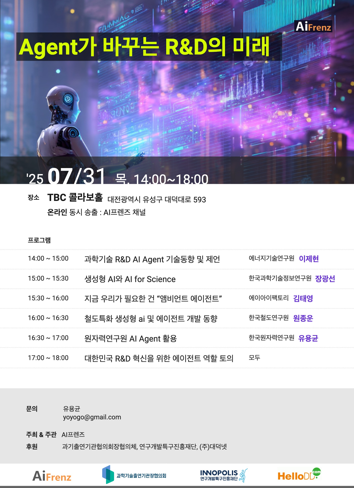
- 이번 행사는 출연연 네 곳과 기업 한 곳에서 발표를 했습니다.
- 순서대로 에너지연, KISTI, AI Factory, 철도연, 원자력연입니다.
- 제가 한 시간 가량 개념과 역사 등을 말씀드리고, 네 곳에서 각자의 노력과 성과를 선보였습니다.
1.1. 에너지연 이제현
- 강의자료 공유드립니다: [다운로드]
1.2. KISTI 장광선 박사
1.3. AI Factory 김태영 대표
1.4. 철도연 원종운 박사
1.5. 원자력연 유용균 박사
2. R&D, AI, 그리고 Agent
-
젠슨 황으로 인해 Agentic AI, Physical AI가 유명해졌습니다.
-
그러나 이런 일에는 부작용이 반드시 따르는데,
-
아무데나 agent를 붙이는 agent washing이 그 중 하나,
-
그리고 agent에만 주목하다 보니 정작 중요한 AI, data는 소홀해지는 현상이 하나입니다.
-
첫 발표를 맡아 전반적으로 올바른 개념을 전달드려야겠다는 생각을 했습니다.
-
그리고 Agent, R&D, 그리고 R&D AI agent 순서로 구성을 했습니다.
2.1. AI Agent
-
AI agent를 다루기 전에 agent에 대한 개념을 명확히 합니다.
-
agent는 행동한다는 뜻의 라틴어 agere에서 파생된 말로, 대리인을 의미합니다.
-
뿌리가 같은 말로 의제를 뜻하는 agenda가 있습니다.
-
인간사회는 문명화와 동시에 관료제를 채택했습니다.
-
한 사람이 모든 것을 다 하는 것이 아니라 전문 영역을 나누어 담당하고 책임지는 구조입니다.
-
여기서 일을 지시하는 사람(principal)과 수행하는 사람(agent)간의 관계가 생깁니다.
-
principal-agent relationship이라고 하며 보통 주인-대리인 관계로 번역됩니다.
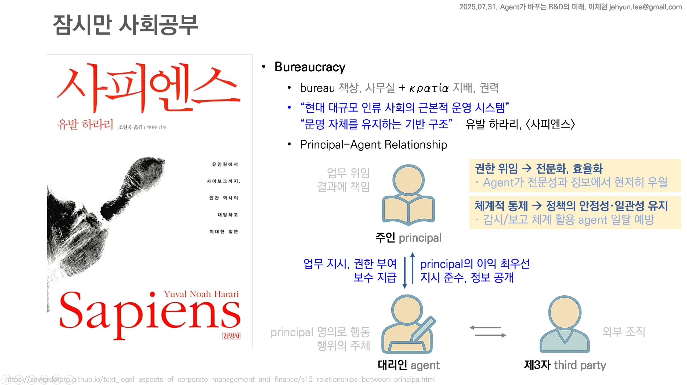
-
agent는 자기 밑에 다른 agent를 둡니다. sub-agent라고 합니다.
-
현대 사회에서는 직업을 가진 이라면 누구나 agent입니다.
-
스스로의 욕망을 위해 행동하기보다 계약 관계에 있는 타인을 위해 종사하고 보수를 받습니다.
-
agent는 전문성을 가지고, 필요한 도구를 이용해, 자율적으로 움직입니다.
-
시간이 허락한다면 이 구조에서 발생하는 여러 문제도 다루고 싶었지만 생략했습니다.
-
principal-agent problem(주인-대리인 문제) 라고 하며
-
agent가 principal의 이익을 충분히 대변하지 않고,
-
정보 비대칭, 감시의 한계 속에서 자신의 이익을 추구함으로써 발생하는 제반 문제입니다.
-
주주와 전문경영인, 국민과 국회의원, 고용주와 직원 등 곳곳에서 생기는 많은 문제의 근원입니다.
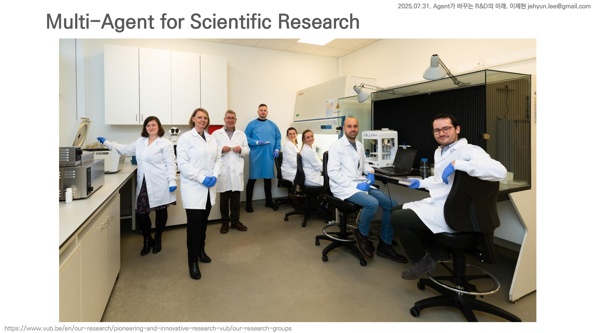
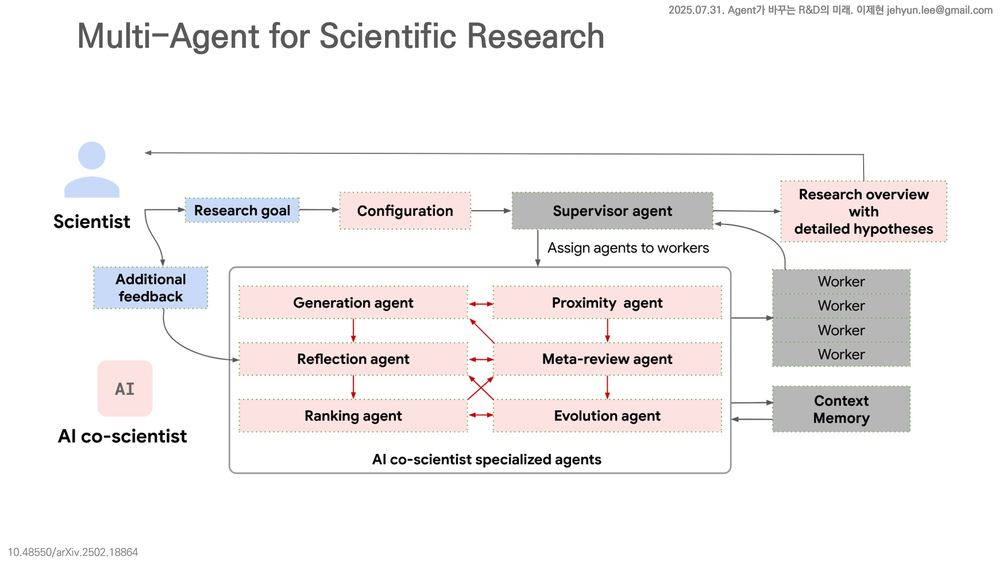
- 연구원들은 자각하지 못하겠지만 연구기관과 개별 연구원 모두 agent입니다.
- 그것도 여럿이 모여 함께 일하는 multi-agent입니다.
2.2. R&D Agent + AI
- 인간 agent가 할 수 없는 일을 할 수 있는 AI agent가 있다면,
- 인간 agent가 할 수 있는 일을 더 저렴하고 빠르게 할 수 있는 AI agent가 있다면,
- AI agent가 인간 agent를 대체하거나 인간 agent와 협업하는 것은 매우 자연스러운 일입니다.
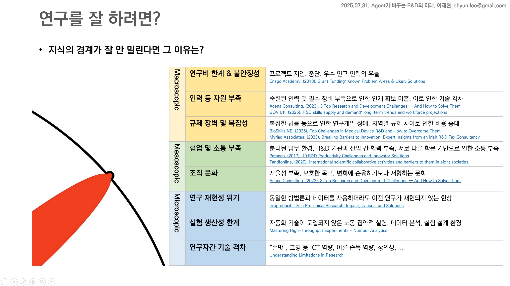
- 다른 일들이 그렇듯 연구는 쉬운 일이 아닙니다.
- 우리 인간 R&D Agent는 유사 이래 다양한 도구들을 활용하며 더 나은 환경을 만들어 왔습니다.
- 최근에는 인간이기에 해결하기 어려운 문제를 해결하고자 AI Agent에게 도움을 청하기 시작했습니다.
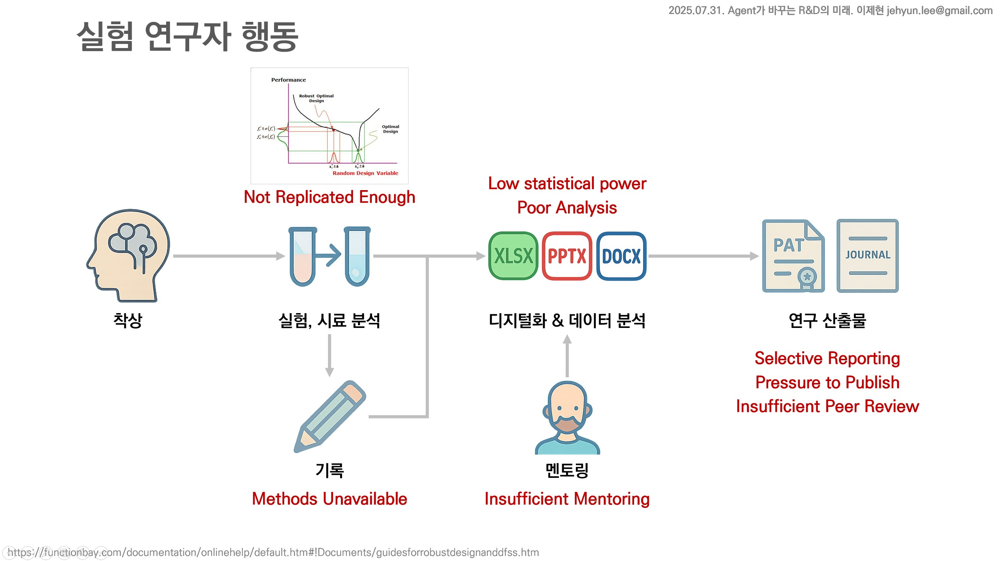
- 연구 재현성 문제가 그 중 하나,
- 연구 데이터 수집 문제가 또 하나입니다.
- 이 중 연구 데이터 수집은 좋은 의도가 부족한 생각과 만나 잘못된 결론에 이르는 예입니다.
- 연구 데이터는 수집과 재현이 용이한 관측 데이터가 있는 한편,
- 수집도 어렵고 재현도 잘 되지 않는 실험 데이터가 있습니다.
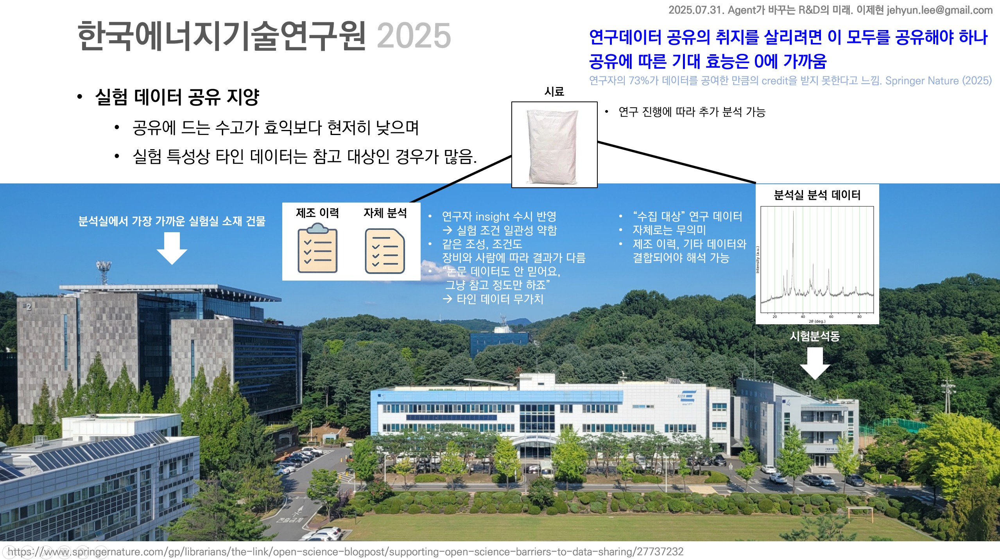
- 관측 데이터는 여기저기서 한데 모으면 힘이 강해지지만
- 실험 데이터는 엄밀하게는 모두 다른 데이터라 한데 모으면 서로에게 노이즈로 작용합니다.
- 엄격하게 관리되는 대기업의 생산라인 데이터도 그렇습니다.
- 훨씬 적은 연구비로 자체제작을 곁들여 만든 연구원의 데이터는 말할 것도 없습니다.
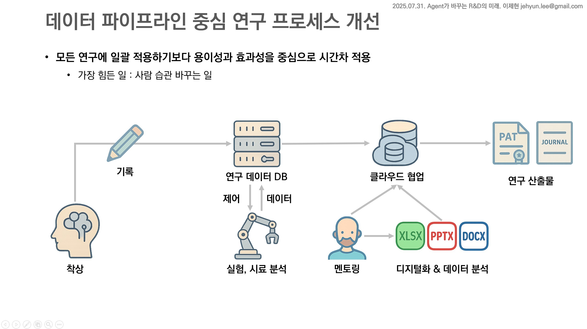
- 연구자들에게 연구 노트를 더 열심히 쓰게 해서 모은다는 것은 어불성설입니다.
- 가장 오염되기 쉽고 디지털화하기 어려운 것이 연구 노트입니다.
- 실험을 하고 기록하는 것이 아니라 기록한 대로 실험이 되는 시스템을 먼저 만들어야 합니다.
- 이렇게 수집되지 않은 데이터는 신뢰할 수 없습니다.
2.3. R&D AI Agent
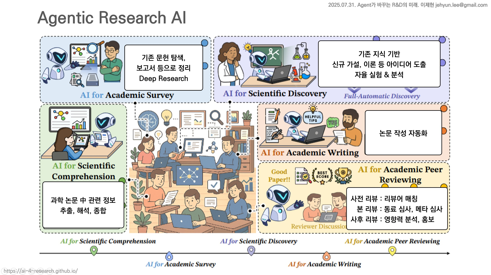
- 최근 LLM의 놀라운 발전으로 많은 벽을 넘었습니다.
- 글 뿐 아니라 그림과 표를 함께 읽어 지식을 획득할 수 있게 되었습니다.
- 추론 능력이 강해져서 가설을 세울 수 있고, 논문 작성과 리뷰도 맡깁니다.
- 언어능력이 발전하면서 신세계가 열렸습니다.
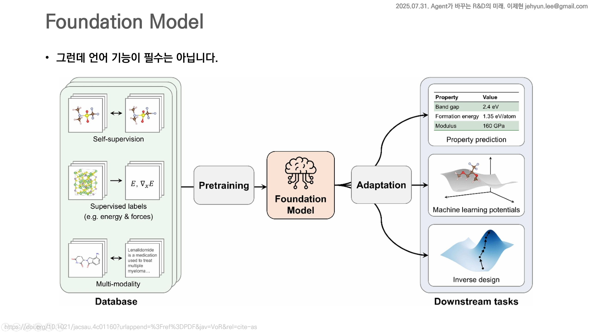
- 그러나 언어 기능이 필수는 아닙니다.
- R&D에는 말로 하는 일보다 숫자로 하는 일이 훨씬 많습니다.
- 이런 일을 하는 파운데이션 모델이 많습니다.
- Meta의 SAM(Segment Anything Model)도 이런 부류입니다.
- 말은 한 마디도 못 하지만 실질적으로 연구에 큰 도움이 되는 모델입니다.
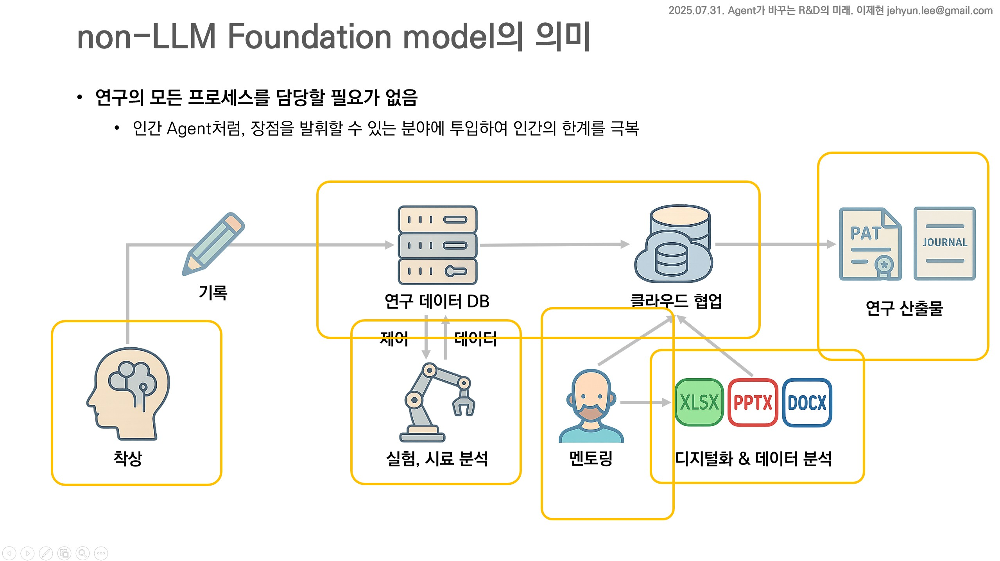
- R&D 프로세스는 매우 복잡 다단합니다.
- 다양한 곳에 다양한 모델이 필요하고, 꼭 언변이 좋을 필요는 없습니다.
- 묵묵히 자기 실험을 열심히 하는 연구원처럼, 맡은 일을 똑부러지게 하고 결과를 전달하면 됩니다.
- agent의 언어적, 사회적 의미를 생각해 보면 전혀 이상하지 않습니다.
3. 정리
-
R&D AI Agent를 어떻게 만들까?를 고민하기 이전에,
-
내가 맡은 연구를 어떻게 잘 할 수 있을까를 고민하는 것이 맞습니다.
-
R&D AI Agent의 본질은 연구이기 때문입니다.
-
그렇다면 관찰해야 할 것은 최신의 AI 기술이 아니라 내 연구에 필요한 기술과 자원입니다.
-
이들 중 데이터와 AI 기반으로 할 수 있는 일이 있다면, 데이터가 흐를 수 있는 길을 깔아주어야 합니다.
-
이를 data pipeline이라고 부릅니다.
-
필요한 데이터가 사람의 손을 거치지 않고 수집, 가공, 분석, 활용되어야 합니다.
-
데이터 파이프라인 없이 AI를 구현한다, 또는 AI Agent를 만드는 것은 불가능합니다.
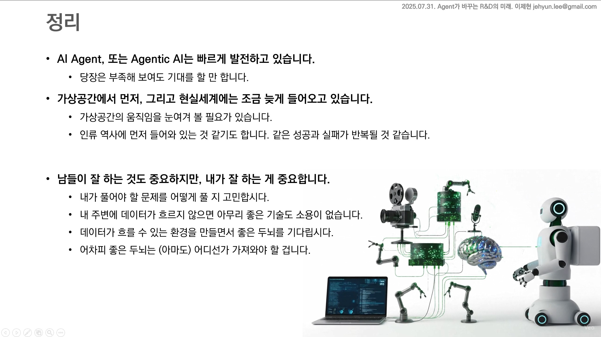
- 강의자료는 여기에서 내려받으실 수 있습니다: [다운로드]